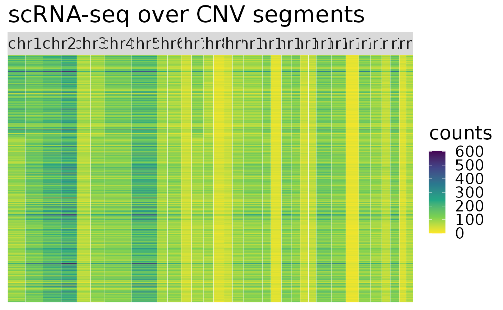
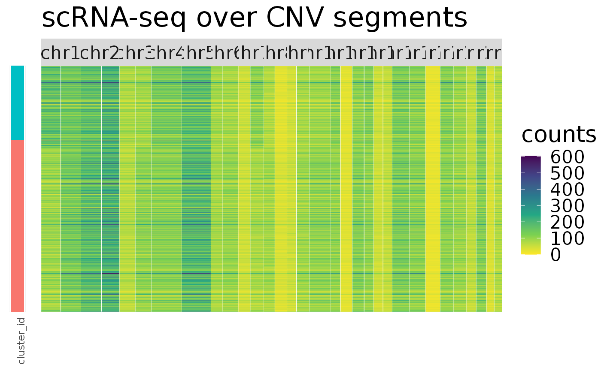
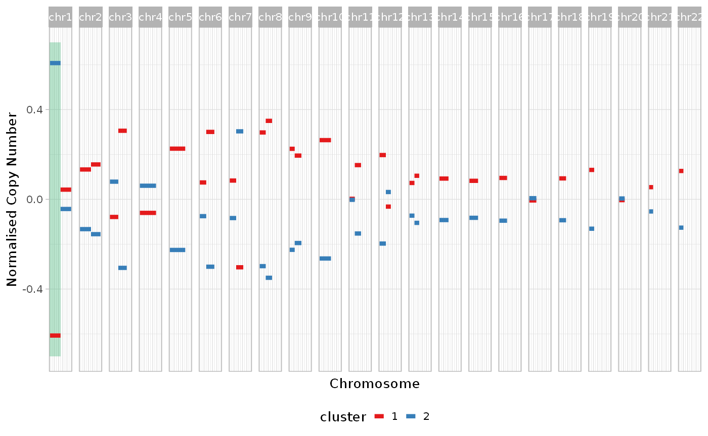

vignettes/simulated_example.Rmd
simulated_example.RmdIn this vignette we present a simple inference with a simulated dataset to show how to perform inference with CONGAS and RCONGAS. We start by creating a simulated dataset using the CONGAS generative model. In short the data generations step are: * Randomly segment the genome * Create a clone tree and set the distance between clones * Sample CNV states according to the clonal relations * Set the number of cells and clonal proportions * Sample the library size parameter for each clone * Sample the segment values using the CONGAS likelihood
#library(Rcongas)
devtools::load_all(".")
#> Loading Rcongas
#> ✓ Loading Rcongas, 'Copy-Number genotyping from single cells'. Support : <https://militeee.github.io/Rcongas/>
#performs the first 3 steps
cnv_df <- Rcongas:::generate_cluster_ploidy_df(K = 2, spots = 2,tree = generate_random_tree(2))
simul <- Rcongas:::run_simulation_generative(cnv_df, ncells = 1000, props = c(0.7,0.3), K = 2)
plot_counts.CNVSimulation(simul) We can then perform CONGAS inference with just one function
inf <- best_cluster(simul, "MixtureGaussian", 1:4,param_list = list("theta_scale" = 32, "theta_rate" = 32, "cnv_var" = 0.65),steps = 600, lr = 0.05, method = "BIC", MAP = T)
#> [1] "Best number of cluster is 2"
plot_gw_cna_profiles(inf)
#> ✓ Loading CNAqc, 'Copy Number Alteration quality check'. Support : <https://caravagn.github.io/CNAqc/>